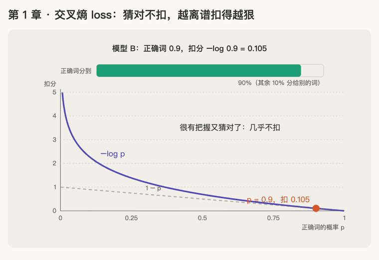

第 1 章 · 交叉熵 loss：模型猜错了多少，怎么量
本章回答：训练时说"把每个参数往猜得更对的方向挪一点"，那"猜得对不对"总得有个分数。这个分数是怎么算的？为什么是 −log？困惑度又是什么？
讲解日期：2026-11-10 起 · 上一章：无（前作《从零读懂 Transformer》讲完第 24 章）· 下一章：第 2 章 梯度与反向传播（待写）
对应原文：CS336 a1 handoutcs336-spring2025/materials/text/cs336_spring2025_assignment1_basics.txt§4 开头 L1362–L1368，§4.1 L1370–L1416（式 16、17、18 和脚注 6、7）；AIAYNtransformer-deep-dive/materials/text/papers/attention-is-all-you-need-1706.03762.txt§5.4 label smoothing L409–L410、Table 3 困惑度 L446–L454
本章缩写：loss（损失：模型这一次猜错了多少，越小越好）；LM = Language Model（语言 / 模型：根据前面的词猜下一个词的模型）；θ（读作"西塔"，theta）：模型里全部参数的统称；\(p_\theta\)：参数为 θ 的模型给出的概率（p = probability：概率）；\(x_{1:i}\)：第 1 到第 i 个词；log（对数，本章第二步讲）；exp = exponential（指数：\(e^{x}\)）；NLL = Negative Log-Likelihood（负 / 对数 / 似然）；\(o_i\)：第 i 个位置的 logits（o = output：输出）；vocab_size（vocabulary size：词表大小）；inf = infinity（无穷大）；batch（一批）；perplexity（困惑度）。全部缩写见 缩写与术语表
讲解
第一步：给每次猜测打一个"扣分"：只看正确答案那个词的概率（2026-11-10）
类比：考试扣分。 模型每猜一次下一个词，我们就给它扣一点分：猜得越离谱，扣得越多；猜得完全对，不扣分。训练要做的事，就是让平均扣分越来越少。这个扣分就叫 loss（损失）。
答案从哪来：句子本身就是答案。 训练用的是现成的句子。比如"狗 咬 人"：
| 模型已经看到 | 要猜的下一个词 | 正确答案 |
|---|---|---|
| 狗 | 第 2 个词 | 咬 |
| 狗 咬 | 第 3 个词 | 人 |
不需要人来标注，后一个词就是前面那几个词的"标准答案"。
模型给的是什么：一整张概率表。 前作第 22 章讲过：decoder 最后一行 h 给词表里每个词打分，softmax 之后变成 V 个概率，加起来等于 1。
handout 把"这张表里某个词的概率"写成（L1371）：
逐个符号读：
| 符号 | 读法 | 意思 |
|---|---|---|
| \(p\) | p | 概率（probability） |
| \(\theta\) | 西塔 | 模型的全部参数（\(W^Q\)、FFN、embedding 表……），写在下标表示"这是参数为 θ 的模型给的概率" |
| \(x_{i+1}\) | x 下标 i 加 1 | 第 i + 1 个词，也就是要猜的那个 |
| 竖线 \(\mid\) | "在……的条件下" | 竖线右边是已经知道的 |
| \(x_{1:i}\) | x 下标 1 到 i | 第 1 个到第 i 个词，也就是已经看到的前文 |
整句读作："参数为 θ 的模型，在看到前 i 个词的条件下，认为第 i + 1 个词是 \(x_{i+1}\) 的概率"。
只看正确答案那个词。 概率表里有 V 个数，但打分时只取正确答案那一格。原因是：正确答案只有一个（handout 脚注 7 说，目标是"只在正确词上为 1、其余全为 0"的分布）。而且 softmax 的概率加起来固定是 1，给正确词的多了，给其他词的自然就少了，不用另外管。
数字演示：前作第 22 章第 2 轮，输入"<开始> dog"，正确答案是 bites。三个不同的模型给 bites 的概率：
| 模型 | 给正确答案 bites 的概率 p | 猜得怎么样 |
|---|---|---|
| A | 0.537（前作第 22 章那张表） | 还行 |
| B | 0.9 | 很好 |
| C | 0.05 | 很差，几乎没想到 bites |
p 越大，猜得越好。p = 1 就是"百分之百确定是 bites"，满分。
接下来要解决的问题：p 是"越大越好"，可我们想要的是一个"越小越好"的扣分，而且要满足：
- p = 1（完全猜对）时，扣分是 0；
- p 越接近 0（越离谱），扣分越大，而且大得越来越快。
能做到这一点的，就是下一步要讲的 log（对数）。
一句话：训练时的"扣分"只看一件事：模型给正确答案那个词的概率 p；p 越大越好，下一步把它变成"越小越好"的 loss。
第二步：log（对数）："e 的几次方等于它？"（2026-11-10）
先回忆前作第 5 章：e ≈ 2.718，\(e^{x}\) 是"e 乘自己 x 次"。比如 \(e^{2} = 2.718 \times 2.718 \approx 7.389\)；\(e^{0} = 1\)；\(e^{-1} \approx 0.368\)（负数次方 = 倒过来，\(1/e\)）。
log 是反过来问。 \(e^{x}\) 是"给你 x，问结果"；log 是"给你结果，问 x"：
读作"log y 等于 x"，意思是"e 的 x 次方正好等于 y"。机器学习里写 log，默认都是以 e 为底（数学课上叫 ln，自然对数）。
类比：查表倒着查。 第 5 章有一张"x → \(e^{x}\)"的表；log 就是拿着右边的数，回头找左边的 x。
数字演示（都可以用"e 的几次方"倒推验证）：
| y | log y | 验证：e 的这么多次方 |
|---|---|---|
| 7.389 | 2 | \(e^{2} \approx 7.389\) |
| 2.718（= e） | 1 | \(e^{1} = e\) |
| 1 | 0 | \(e^{0} = 1\) |
| 0.5 | −0.693 | \(e^{-0.693} \approx 0.5\) |
| 0.1 | −2.303 | \(e^{-2.303} \approx 0.1\) |
| 0.01 | −4.605 | \(e^{-4.605} \approx 0.01\) |
| 0.001 | −6.908 | \(e^{-6.908} \approx 0.001\) |
看出三件事（第三步全靠它们）：
- log 1 = 0：因为 \(e^{0} = 1\)。
- y 在 0 到 1 之间时，log y 是负数：要让 e 的几次方变得比 1 小，次方只能是负的。
- y 越接近 0，log y 越往负的方向跑，而且越跑越快：0.1 → −2.3，0.01 → −4.6，0.001 → −6.9。y 每缩小 10 倍，log y 就再减 2.3。y 趋近 0 时，log y 趋向 −∞（前作第 17 章说 \(e^{-\infty} = 0\)，这里正好倒过来）。
注意：log 0 没有定义。e 的任何次方都大于 0，找不到一个 x 让 \(e^{x} = 0\)。所以概率 p 不能是 0，否则 log p 算不出来（实际上 softmax 给每个词的概率都大于 0，第 6 章讲过 \(e^{x}\) 永远是正数）。
一句话：log y 问的是"e 的几次方等于 y"；log 1 = 0，0 到 1 之间的数取 log 是负数，越接近 0 越负、负得越快。
第三步：扣分 = −log p：猜对不扣，越离谱扣得越狠（2026-11-14）
把第二步的三件事拿来用。 log p 在 p = 1 时是 0，p 在 0 到 1 之间时是负数，p 越接近 0 越负。我们要的扣分是"越小越好、最小是 0"，所以前面加个负号，把它翻成正数：
ℓ（手写体的 l，读作"艾尔"）就是这一次猜测的 loss，p 是模型给正确答案那个词的概率（第一步那一格）。handout 题目里写成 \(\ell_i = -\log \text{softmax}(o_i)[x_{i+1}]\)（L1392），意思一样，第四步再拆。
数字演示：第一步的三个模型，再加几个更极端的：
| 正确词的概率 p | log p | 扣分 −log p | 对照：如果用 1 − p 当扣分 |
|---|---|---|---|
| 1（百分之百确定，猜对） | 0 | 0 | 0 |
| 0.9（模型 B） | −0.105 | 0.105 | 0.1 |
| 0.537（模型 A） | −0.622 | 0.622 | 0.463 |
| 0.5 | −0.693 | 0.693 | 0.5 |
| 0.1 | −2.303 | 2.303 | 0.9 |
| 0.05（模型 C） | −2.996 | 2.996 | 0.95 |
| 0.01 | −4.605 | 4.605 | 0.99 |
| 0.001 | −6.908 | 6.908 | 0.999 |
第一步要的两条都满足了：
- p = 1 时扣分是 0；
- p 越接近 0 扣得越多，而且越来越快：p 从 0.01 降到 0.001，−log p 从 4.6 涨到 6.9。
为什么不直接用 1 − p？ 看最右一列：1 − p 最多只扣 1 分。p = 0.01 和 p = 0.001 扣的分几乎一样（0.99 和 0.999），模型分不清"错得离谱"和"错得更离谱"。−log p 没有上限，越是自信地猜错，罚得越重，模型就会优先改掉最离谱的错。
第二个好处：整句的概率是连乘，取 log 后变成相加。 模型给整句"狗 咬 人"的概率，是每一步正确词的概率乘起来：比如 0.5（猜对"咬"）× 0.8（猜对"人"）= 0.4。句子一长，几百个小于 1 的数连乘，结果小到电脑存不下。log 有一条性质：
原因就是前作第 5 章的指数法则"同底相乘，指数相加"：\(e^{x} \times e^{y} = e^{x+y}\)。验证一下：0.1 × 0.01 = 0.001，log 0.1 + log 0.01 = −2.303 + (−4.605) = −6.908 = log 0.001 ✓。所以"整句概率越大越好"就等价于"每个词的 −log p 加起来越小越好"，连乘变成了相加，不会小到存不下。
名字从哪来：
- negative log-likelihood（负 / 对数 / 似然，简称 NLL）：likelihood 是"模型认为这份正确答案出现的可能性"，也就是 p；取 log，再取负。−log p 就是它。
- cross-entropy（交叉 / 熵）：handout 脚注 7 说，这是"只在正确词上为 1 的分布"和"模型的 softmax 分布"之间的交叉熵。一般的交叉熵是 \(-\sum_a q_a \log p_a\)：q 是正确答案的分布，p 是模型的分布，对词表里每个词 a 都算一项再加起来。正确答案的分布 q 只有正确词那一格是 1、其余都是 0（这种分布叫 Dirac delta，狄拉克 δ 分布，就是"全部押在一个点上"）。乘 0 的项全消失，只剩 \(-1 \times \log p_{\text{正确词}}\)。所以交叉熵 loss 就是 −log(正确词的概率)，两个名字说的是同一件事。
一句话：一次猜测的 loss = −log(正确词的概率)：猜对是 0，越离谱罚得越狠而且没有上限；整句的概率连乘，取 log 后变成每个词的 loss 相加。
第四步：式 16、17：所有位置取平均；从 logits 直接算 loss（2026-11-14）
式 16：整个训练集的 loss = 所有句子、所有位置的扣分取平均（L1371–L1378）：
逐个符号读：
| 符号 | 读法 | 意思 |
|---|---|---|
| \(\ell(\theta; D)\) | 艾尔 θ 分号 D | 参数为 θ 的模型在训练集 D 上的 loss；训练就是调 θ 让它变小 |
| \(D\) | D（Dataset：数据集） | 训练集，里面是一句一句的序列 |
| \(\lvert D \rvert\) | D 的绝对值 | 这里是"D 里有几句" |
| \(m\) | m | 每句要猜几次。handout 说每句长 m + 1 个词，第 1 个词没有前文可猜，所以猜 m 次 |
| \(\sum_{x \in D}\) | 对 D 里每一句 x 求和 | Σ（西格玛）= 加起来，前作第 4 章讲过 |
| \(\sum_{i=1}^{m}\) | i 从 1 到 m 求和 | 一句里的每个位置都算一次 |
| \(\frac{1}{\lvert D \rvert m}\) | 一共猜了 \(\lvert D \rvert \times m\) 次，除以次数就是平均 |
数字演示：训练集只有两句，每句 3 个词（m = 2，每句猜 2 次）：
| 句子 x | 位置 i | 已经看到 | 正确答案 | 模型给的 p | −log p |
|---|---|---|---|---|---|
| 狗 咬 人 | 1 | 狗 | 咬 | 0.5 | 0.693 |
| 狗 咬 人 | 2 | 狗 咬 | 人 | 0.8 | 0.223 |
| 猫 吃 鱼 | 1 | 猫 | 吃 | 0.4 | 0.916 |
| 猫 吃 鱼 | 2 | 猫 吃 | 鱼 | 0.9 | 0.105 |
加起来 1.938，一共猜了 |D| × m = 2 × 2 = 4 次，平均 ℓ = 1.938 / 4 ≈ 0.484。
一次前向就能拿到所有位置（handout L1380 括号里那句）：前作第 17 章的 causal mask（因果 / 遮罩）让第 i 个位置只看得到前 i 个词。所以把"狗 咬 人"整句一次送进 decoder，第 1 行输出就是"看到'狗'时的猜测"，第 2 行就是"看到'狗 咬'时的猜测"，同时出来，不用一个位置跑一遍。这一点和生成时不同：前作第 21 章生成译文时每轮只能多出一个词，要跑很多轮；训练时正确答案都已知，一次全算完。
式 17：p 是从 logits 来的（L1381–L1384）：
| 符号 | 意思 |
|---|---|
| \(o_i\) | 第 i 个位置的 logits（o = output：输出），一行 vocab_size 个分数，就是前作第 22 章最后一行 h 乘 \(W_{out}\) 得到的那一行 |
| \(o_i \in \mathbb{R}^{\mathrm{vocab\_size}}\) | 这一行有 vocab_size（词表大小）个实数（\(\mathbb{R}\) = real numbers：实数） |
| \(o_i[k]\) | 这一行里第 k 个数，也就是第 k 个词的分数（脚注 6） |
| \(\exp(x)\) | 就是 \(e^{x}\)，写成 exp（exponential：指数）是为了在分数线上好排版 |
| \(a\) | 求和用的编号，从 1 走到 vocab_size，把词表里每个词都算一遍 |
这就是前作第 6 章的 softmax：分子是正确词分数的 e 次方，分母是所有词的 e 次方之和。
把 log 和 exp 抵消掉（handout L1396 要求的第二条）。loss 是 −log 这个分数。用两条性质：\(\log(a / b) = \log a - \log b\)（除法变减法，和第三步"乘法变加法"是同一回事），以及 \(\log e^{x} = x\)（log 本来就是 e 的次方倒着查）：
读法：loss = −(正确词的分数) + log(所有词 e 次方之和)。后面那一项叫 log-sum-exp（对数 / 求和 / 指数：先取 exp、再求和、再取 log）。好处是不用先算出概率再取 log：概率很小时（比如 \(10^{-30}\)）先算出来会丢精度，直接从分数算就没这个问题。
数字演示：前作第 22 章那 8 个分数，正确答案 bites 是 2.9：
| 词 | 1 | 2 | 3 | 4 | 5 | 6 | 7 bites | 8 |
|---|---|---|---|---|---|---|---|---|
| 分数 \(o[a]\) | 0.7 | −1.7 | 1.7 | −1.6 | 2.0 | −1.5 | 2.9 | −1.6 |
- 所有词的 \(e^{o[a]}\) 加起来 ≈ 33.86；
- log 33.86 ≈ 3.522；
- ℓ = −2.9 + 3.522 = 0.622。
和第三步模型 A 那一行（p = 0.537，−log p = 0.622）一模一样：两种算法结果相同。
再减去最大值（handout L1395 要求的第一条）。如果分数是 [1000, 999, 998]，\(e^{1000}\) 远远超出电脑能存的范围（float32 最大约 \(3.4 \times 10^{38}\)，大约 \(e^{88.7}\) 就到头了），会得到 inf（infinity：无穷大），结果算不出来。前作第 6、7 章讲过：所有分数同时减去同一个数，softmax 不变。所以先减去最大值 1000，变成 [0, −1, −2]：
[0, −1, −2] 的 e 次方是 1 + 0.368 + 0.135 = 1.503，log 1.503 = 0.408；正确词若是第一个，ℓ = −0 + 0.408 = 0.408。最大的那项变成 \(e^{0} = 1\)，永远不会溢出。上面 bites 那个例子也可以这样算：最大值 2.9，减完后 e 次方之和 ≈ 1.863，log 1.863 = 0.622，再加回 2.9 得 3.522，结果不变。
一个 batch 再平均一次：训练时一次送进很多句（batch：一批），每个位置各算一个 \(\ell_i\)，最后取平均，这就是式 16 里的 \(\frac{1}{\lvert D \rvert m}\)。
一句话：式 16 是"所有句子、所有位置的 −log p 取平均"，一次前向就拿到全部位置；式 17 把 p 换成 logits，loss = −正确词的分数 + log-sum-exp，算之前先减最大值防溢出。
第五步：困惑度 perplexity：相当于在几个词里瞎猜（2026-11-14）
问题：loss 0.484 是好是坏？这个数不直观。评估模型时，handout 还要报 perplexity（困惑度，L1405–L1410）：
读法：先把每个位置的 loss \(\ell_1, \dots, \ell_m\) 取平均，再取 e 的次方。exp 正好把 log 倒回去。
类比：相当于在几个词里闭眼抽。 如果模型每次都在 k 个词里平均地猜（每个给 1/k），那么正确词的概率是 1/k，loss = −log(1/k) = log k，困惑度 = \(e^{\log k}\) = k。所以困惑度读作"模型平均相当于在几个词里犹豫"。
数字演示：
| 情况 | 平均 loss | 困惑度 | 怎么理解 |
|---|---|---|---|
| 每次都百分之百猜对 | 0 | \(e^{0}\) = 1 | 不犹豫，只有一个选项 |
| 第四步那两句 | 0.484 | \(e^{0.484}\) ≈ 1.62 | 平均在一两个词里犹豫 |
| 4 个词里瞎猜 | log 4 = 1.386 | 4 | |
| 刚开始训练、啥都不会的模型，词表 10000（a1 用 TinyStories 训练时的词表大小，L1910） | log 10000 ≈ 9.21 | 10000 | 等于在整个词表里瞎猜 |
| AIAYN base 模型（Table 3 L451–L454） | log 4.92 ≈ 1.59 | 4.92 | 平均在约 5 个 token 里犹豫 |
所以 loss 和困惑度是一回事的两种写法：loss 越小，困惑度越接近 1。看训练日志时，刚开始 loss 应该接近 log(词表大小)，如果一开始就远大于它，多半是代码写错了。
注意：困惑度只能在同一种切词方式下比较。AIAYN Table 3 的注里特意说，它报的困惑度是按 BPE 切出来的 token 算的（per-wordpiece），不能和按整词算的困惑度比（L448–L449）：切得越碎，每次要猜的东西越简单，困惑度自然越低。
顺带：label smoothing（标签 / 平滑，AIAYN §5.4 L409–L410）。训练时不让正确词的目标是 1，而是 0.9，剩下 0.1 分给其他词。交叉熵里 q 不再只有一格非零，模型会"没那么自信"。原文说这会让困惑度变差，但翻译更准。
一句话：困惑度 = exp(平均 loss)，读作"模型平均相当于在几个词里犹豫"；全对是 1，在整个词表里瞎猜就是词表大小。
动画演示：正确词的概率 p 和扣分 −log p

可交互版：animations/01-cross-entropy.html（需要用本地服务打开，见 animations/README.md"跑起来看"；滑块：把正确词的概率 p 从 0.01 拖到 0.99，看 −log p、1 − p 和"相当于在几个词里猜"怎么变）。
看点：
- p = 0.9、0.537、0.05、0.01 依次出现，扣分 0.105 → 0.622 → 2.996 → 4.605；
- 曲线越往左越陡：p 越小，罚得越狠；虚线 1 − p 最多到 1，分不清"离谱"和"更离谱"；
- 最后一帧把第四步那两句的 4 次扣分取平均得 0.484，再取 exp 得困惑度 1.62。
练习与作答记录
题 1（第一步）：训练句子是"小明 爱 吃 苹果"。模型已经看到"小明 爱 吃"，要猜下一个词。 （a）正确答案是哪个词？在 \(p_\theta(x_{i+1} \mid x_{1:i})\) 里，这时 i 等于几？ （b）模型甲给"苹果"的概率是 0.2，模型乙给 0.6。哪个模型猜得更好？为什么只看"苹果"这一格就够了？
作答（2026-11-10）："-3"
按"i = 3"理解（多打了一个"-"）：✓ 模型已经看到"小明 爱 吃"3 个词，所以 i = 3，要猜的是第 i + 1 = 4 个词。i 数的是"已经看到几个词"，不会是负数。（a）的"正确答案是哪个词"和（b）还没答。
作答（2026-11-10）："第二个更好"
✓ 模型乙给"苹果"0.6，比甲的 0.2 大，猜得更好。补全（a）：正确答案是"苹果"。（b）后半问"为什么只看苹果这一格"没答，答案在第一步：正确答案只有一个；softmax 的概率加起来固定是 1，给正确词的多了，别的词自然少了。
题 2（第二步 log）： （a）e 的几次方等于 1？所以 log 1 等于几？ （b）已知 \(e^{-2.303} \approx 0.1\)，那么 log 0.1 约等于几？ （c）p 是 0 到 1 之间的概率时，log p 是正数还是负数？p 越接近 0，log p 怎么变？
题 3（第三步 −log p）： （a）模型给正确词的概率是 0.1，扣分 −log p 是多少？（用第二步的表） （b）甲模型给正确词 0.01，乙模型给 0.001。用 1 − p 扣分，两者差多少？用 −log p 扣分，差多少？哪种扣分更能分出"更离谱"？ （c）一句话"狗 咬 人"，猜"咬"的概率 0.5，猜"人"的概率 0.8。整句的概率是多少？两步的 −log p 加起来，等于整句概率的 −log 吗？
题 4（第四步 式 16、17）： （a）训练集 3 句，每句 5 个词。式 16 里 |D| 和 m 各是几？一共猜了几次？ （b）三个词的分数是 [3, 1, 0]，正确答案是第一个。用"−正确词分数 + log-sum-exp"算 loss（提示：\(e^{3} \approx 20.09\)，\(e^{1} \approx 2.718\)，log 23.81 ≈ 3.170）。 （c）分数变成 [103, 101, 100]，loss 会变吗？为什么实现时要先减去最大值？
题 5（第五步 困惑度）： （a）一个模型平均 loss 是 log 8 ≈ 2.079，困惑度是多少？用一句话说它是什么意思。 （b）词表 10000 的模型刚开始训练，loss 大约应该是多少？如果日志里第一步 loss 是 50，你会怎么想？
口诀
句子自己当答案，只看正确那一格。
log 问"e 的几次方"，1 是零、越小越负。
扣分就取负 log：猜对不扣，越错越狠没上限；连乘变相加，整句不怕小。
全部位置取平均，一次前向全拿到；分数直接算，减去最大不溢出。
平均 loss 取 exp，就是困惑度：相当于在几个词里犹豫。
本章复习卡片
必背公式：B01–B03（B01 −log p 和名字的由来；B02 从 logits 直接算、减最大值；B03 困惑度）。练习做完后，按答错、卡住的地方再补。
附录 · 延伸阅读
留给以后深入学习用，不影响本章主线。★ 是建议先读的。
- CS336 handout 在cs336-spring2025/materials/text/cs336_spring2025_assignment1_basics.txt。
- 本地论文的文本版在transformer-deep-dive/materials/text/papers/，表里的行号就是指这个文本版。
推荐阅读
| 读什么 | 读哪里 | 读它为了什么 |
|---|---|---|
| ★ CS336 assignment 1 handout | §4.1 L1370–L1416（式 16、17、18，脚注 6、7，Problem cross_entropy） | 本章原文；动手题：写 run_cross_entropy，要求减最大值、log 和 exp 抵消、对 batch 取平均（uv run pytest -k test_cross_entropy） |
| ★ CS336 assignment 1 handout | §3.5.4 softmax 式 (10) 及其后一段（L1137–L1147） | 同一个"先减最大值"的技巧，用在 softmax 上 |
| Attention Is All You Need | §5.4 L409–L410；Table 3 L446–L454 | label smoothing 让困惑度变差但 BLEU 变好；困惑度按 wordpiece 算，不能和按词算的比 |
| Phuong & Hutter 2022，Formal Algorithms for Transformers | formal-algorithms-transformers-2207.09238.txt，Algorithm 13 DTraining（训练算法，L853 起） |
用伪代码看"所有位置的 −log p 加起来，再对参数求梯度"（下一章接着讲梯度） |
| Goodfellow, Bengio, Courville《Deep Learning》 | 第 3.13 节 Information Theory；第 5.5 节 Maximum Likelihood Estimation | 熵、交叉熵、KL 散度的定义；为什么"最大化似然"等于"最小化交叉熵" |
数学原理
- log 的三条性质：\(\log(ab) = \log a + \log b\)（乘法变加法），\(\log(a/b) = \log a - \log b\)（除法变减法），\(\log e^{x} = x\)。都来自指数法则 \(e^{x} e^{y} = e^{x+y}\)。
- 交叉熵：\(H(q, p) = -\sum_a q_a \log p_a\)。q 是 one-hot（只有正确词是 1）时，只剩 \(-\log p_{\text{正确词}}\)。
- 最大似然 = 最小交叉熵：整句概率 \(\prod_i p_i\) 越大越好 ⇔ \(\sum_i -\log p_i\) 越小越好（log 单调递增，取 log 不改变谁大谁小）。
- log-sum-exp 平移：\(\log \sum_a e^{o_a} = c + \log \sum_a e^{o_a - c}\)，取 \(c = \max(o)\) 防溢出。
- 均匀猜测的困惑度 = 选项个数：每个给 1/k，loss = log k，exp 回去就是 k。
公式清单
| 公式 | 意思 |
|---|---|
| \(\log y = x \iff e^{x} = y\) | log 是 e 的几次方倒着查 |
| \(\ell = -\log p_\theta(x_{i+1} \mid x_{1:i})\) | 一次猜测的交叉熵 loss |
| \(\ell(\theta; D) = \frac{1}{\lvert D \rvert m} \sum_{x \in D} \sum_{i=1}^{m} -\log p_\theta(x_{i+1} \mid x_{1:i})\) | 式 16：所有句子、所有位置取平均 |
| \(p = \frac{\exp(o_i[x_{i+1}])}{\sum_a \exp(o_i[a])}\) | 式 17：概率来自 logits 的 softmax |
| \(\ell_i = -o_i[x_{i+1}] + \log \sum_a e^{o_i[a]}\) | 从 logits 直接算，log 和 exp 抵消 |
| \(\log \sum_a e^{o_a} = \max(o) + \log \sum_a e^{o_a - \max(o)}\) | 减最大值防溢出 |
| \(\text{perplexity} = \exp\left(\frac{1}{m}\sum_i \ell_i\right)\) | 式 18：困惑度 |